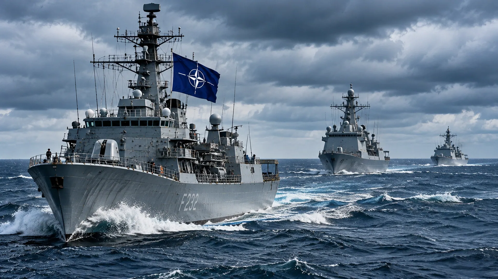

NATO BOLSTERS BLACK SEA SURVEILLANCE
After attacks near allied waters, NATO plans additional patrol aircraft, radar and drones on its eastern flank.

The Black Sea is no longer merely the backdrop to the Russia–Ukraine war. It is increasingly a zone where attacks on commercial shipping threaten to draw NATO members closer to direct confrontation.
Reuters reported a string of strikes on cargo vessels near Romania and Bulgaria, followed by NATO plans to strengthen surveillance using maritime patrol aircraft, radar and drones. The alliance's response is designed to improve warning and monitoring, not automatically to place allied forces into combat.
The geography explains the alarm. Romania and Bulgaria are NATO members. Their waters and coastal infrastructure sit beside routes used by Ukrainian and Russian trade. A drone or missile that misses its intended target can create a political crisis if it damages a ship, port or installation associated with an alliance member.
The conflict has already disrupted grain exports and forced Ukraine to rely more heavily on routes through the Danube and Romania. Those alternatives are vulnerable too. Maritime attacks therefore strike at export revenue, food supply chains and the financial resources needed to sustain the war.
Better surveillance can identify suspicious activity and help commanders reconstruct what happened after an incident. But seeing a threat does not always mean being able to stop it. NATO must decide how to protect shipping without turning every encounter into a direct clash with Russian forces.
The question to watch is whether surveillance remains enough. Another major strike near allied waters could produce pressure for escorts, additional defenses or stronger rules of engagement. Each would change the military balance—and the political risk—in a sea already crowded with weapons.
Sources and further reading: Reporting and source material